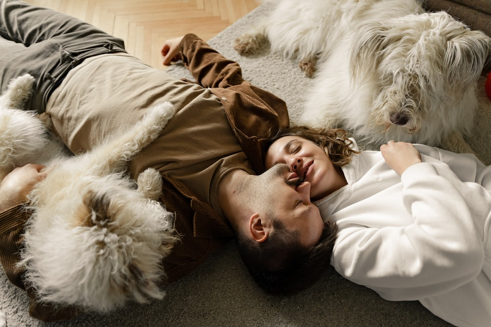

Best Adventure Trips
Why our site1?
That is a great question. There are a lot of other sites that are selling pet products. Why our site is different from other sites is because we do not just want to sell a product to our customers. We want them to have the best experience when they go to our site. In our site they will find the best quality pet products with the best prices. Quality is our top priority! We sell the best products in the market today. We want our customers to be happy with our products and happy with the price they pay. We have a great return policy. All products come with a money back guarantee because we strongly believe in our products. However, if a customer has any problems with their order or with their product, the customer can return any unused portion of that product. No questions asked! We want to help our customers receive important information on how they can best take care of their pets. Every week we will have blog articles written by doctors on tips and tricks to take care of their best friends. Our customers also have a chance to meet other customers through the blog and learn together the best way to take of their pets and share experiences between them. That is why we believe our site will be a success in the market.
Why our site2?
That is a great question. There are a lot of other sites that are selling pet products. Why our site is different from other sites is because we do not just want to sell a product to our customers. We want them to have the best experience when they go to our site. In our site they will find the best quality pet products with the best prices. Quality is our top priority! We sell the best products in the market today. We want our customers to be happy with our products and happy with the price they pay. We have a great return policy. All products come with a money back guarantee because we strongly believe in our products. However, if a customer has any problems with their order or with their product, the customer can return any unused portion of that product. No questions asked! We want to help our customers receive important information on how they can best take care of their pets. Every week we will have blog articles written by doctors on tips and tricks to take care of their best friends. Our customers also have a chance to meet other customers through the blog and learn together the best way to take of their pets and share experiences between them. That is why we believe our site will be a success in the market.
Why our site3?
That is a great question. There are a lot of other sites that are selling pet products. Why our site is different from other sites is because we do not just want to sell a product to our customers. We want them to have the best experience when they go to our site. In our site they will find the best quality pet products with the best prices. Quality is our top priority! We sell the best products in the market today. We want our customers to be happy with our products and happy with the price they pay. We have a great return policy. All products come with a money back guarantee because we strongly believe in our products. However, if a customer has any problems with their order or with their product, the customer can return any unused portion of that product. No questions asked! We want to help our customers receive important information on how they can best take care of their pets. Every week we will have blog articles written by doctors on tips and tricks to take care of their best friends. Our customers also have a chance to meet other customers through the blog and learn together the best way to take of their pets and share experiences between them. That is why we believe our site will be a success in the market.